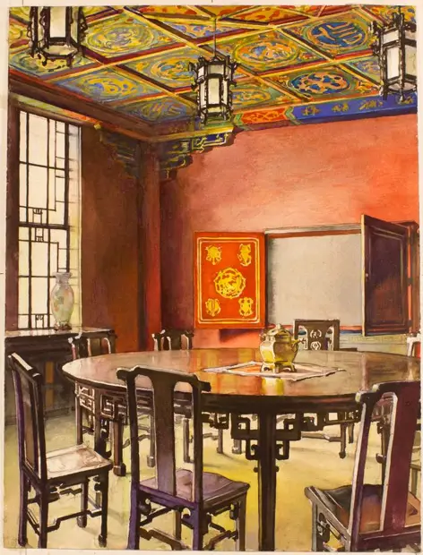

The Chinese Room
访问原网页 ↗Visit original website ↗

S108 · Andrey Avinoff / University of Pittsburgh Art Gallery · 1939–1947
Avinoff 的水彩画描绘匹兹堡大学中国教室。馆方著录为1939至1947年所作，提及圆桌、彩绘天花及1947年出版物。作者为 Avinoff。Avinoff’s watercolor documents the Chinese classroom, including its table and painted ceiling. The gallery dates it to 1939–1947 and references the 1947 publication on the Nationality Rooms.
馆藏图像与原文Archived images and documents

原始网址Original URL
https://collections.uag.pitt.edu/Detail/objects/7917